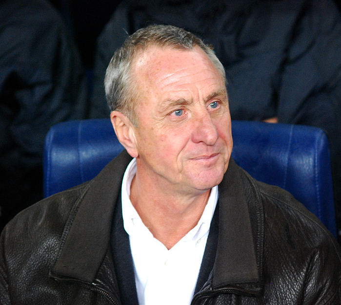

En 1988, Johan Cruyff regresó al club, esta vez como entrenador y reunió lo que más tarde se llamaría el "Dream Team".Utilizó una mezcla de jugadores españoles como Pep Guardiola, José Mari Bakero, Jon Andoni Goikoetxea, Miguel Angel Nadal y Txiki Begiristain mientras firmaba jugadores internacionales como Ronald Koeman, Michael Laudrup, Romário y Hristo Stoichkov.
Hazañas
El entrenador juvenil del Barcelona B, Pep Guardiola, asumió las funciones de Frank Rijkaard al final de la temporada. Guardiola trajo consigo el ahora famoso estilo de juego tiki-taka que le habían enseñado durante su tiempo en los equipos juveniles de Barcelona. En el proceso, Guardiola vendió a Ronaldinho y Deco y comenzó a construir el equipo de Barcelona alrededor de Xavi, Andrés Iniesta y Lionel Messi.